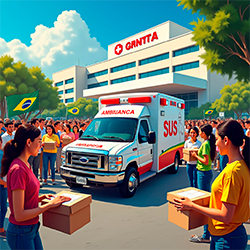

O que fazemos
O AmbuApoio é um site dividido em três áreas: a primeira para doações destinadas à ambulância do SUS; a segunda para que pessoas se voluntariem a ajudar aqueles que precisam de carona para o hospital quando as ambulâncias já estão sendo utilizadas; e a terceira para casos mais sérios, onde os enfermeiros da ambulância antecipariam o Pronto Atendimento através de perguntas, possibilitando que o paciente receba atendimento imediato ao chegar.
Como podem ajudar
Se você estiver interessado, pode ajudar de três maneiras diferentes:
Realizando uma doação:
Fique à vontade para acessar nossa seção de doações e contribuir com qualquer valor que desejar. Cada contribuição, por menor que seja, tem o potencial de causar um impacto significativo na vida de alguém. Sua generosidade pode ajudar a transformar realidades e fazer uma diferença real. Agradecemos profundamente seu apoio e comprometimento com nossa causa.

Oferecendo uma carona:
Se você tem mais de 18 anos e possui uma carteira de habilitação válida, pode ajudar oferecendo carona a pessoas feridas na ausência de ambulâncias. Esse gesto pode fazer uma grande diferença, permitindo que mais indivíduos recebam o atendimento necessário de forma mais rápida e eficiente. Para se oferecer como voluntário e obter mais informações sobre como participar, acesse a seção de voluntários. Sua contribuição pode ser vital para aqueles que mais precisam.
Através de Pronto atendimento
Se você é enfermeiro, sua experiência pode ser extremamente valiosa para o atendimento emergencial em ambulâncias. Ao oferecer seus serviços, você ajudará a reduzir o risco de complicações que podem ocorrer devido a atrasos no atendimento. Sua participação pode fazer uma grande diferença na vida daqueles que precisam de cuidados urgentes. Para se envolver e obter mais informações sobre como contribuir, acesse a seção de voluntários. Agradecemos profundamente sua disposição em ajudar em momentos críticos.